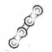

CHAIN 

Motorcycle chain maintenance, along with oil changes and tire maintenance is a crucial part of safe riding. Chains are the unsung mechanical heroes of motorcycling; they're responsible for the crucial task of transferring power from the engine to the rear wheel, and without proper inspection and maintenance, can fail and cripple the motorcycle, or worse, become dangerous projectiles.
Depending on how aggressively you ride, chains should be inspected every 500-700 miles or roughly twice a month. This tutorial covers three essential aspects of chain care: inspection, cleaning, and adjustment.
Items Needed for Chain MaintenanceKeep the following items on hand:
-Various wrenches.
-A soft brush, or old toothbrush.
-An O-ring friendly chain cleaner (if, like most chains, yours is of an o-ring type.)
-O-ring friendly chain lubricant (again, if applicable.)
-A new cotter pin (when adjusting the chain tension.)
-Rags (for wiping grime off the chain.)
-A rubber mallet (optional.)
-A rear wheel stand (optional.)
-A tape measure (optional.)
How to Inspect a Motorcycle Chain
Using a tape measure (or visual estimation, if necessary), grasp the chain at a point halfway between the front and rear sprockets, and pull it up and down. The chain should be able to move roughly one inch up and one inch down. If your motorcycle is on a rear stand or center stand, note that the swingarm will drop if the wheel is lifted from the ground, which will affect the rear geometry and the tension in the chain; compensate accordingly, if necessary.
Because motorcycle chains can stiffen in certain spots and stay pliable in others, it's important to roll the bike forward (or turn the rear wheel if it's on a stand) and check all sections of the chain. If it moves more than about an inch, the chain will need tightening, and if it's too tight, loosening will be in order; this is outlined in subsequent steps. If individual chain links are too tight, the chain might need replacement.
Inspect Your Motorcycle's SprocketsFront and rear sprocket teeth are good indicators of maladjusted chains; inspect the teeth to make sure they are meshing well with the chain. If the sides of the teeth are worn, chance is they haven't been eating well with the chain (which probably shows corresponding wear.) Wave-shaped teeth wear is another irregularity that might suggest that you need new sprockets.
Clean Your Motorcycle ChainWhether or not your chain needs adjusting, you'll want to keep it clean and well-lubricated. Most modern chains are o-ring types which use rubber components and are sensitive to certain solvents. Make sure you use an o-ring approved cleaning agent when you spray the chain and sprockets or use a soft brush to apply the cleaner
Wipe Off Excess GrimeNext, you'll want to wipe off the excess grime using a rag or towel, which will create a clean surface that's friendlier to lubricants. Be sure to thoroughly reach all the sprocket teeth and chain links by rolling the rear wheel (or the entire bike, if it's not on a stand).
Lubricate Your ChainWhile rotating the wheel, evenly spray a layer of lubricant across the chain as it runs along the sprockets. Be sure to also spray the bottom of the rear sprocket, where the lubricant can spread across the chain from the inside using centrifugal force, and penetrate the entirety of the chain. Wipe off excess lubricant with a rag.
Adjust Chain Tension, If NecessaryChain tension is generally determined by the distance between the front and rear sprockets, and many bikes have index marks to help with alignment.
Bikes have differing chain adjustment mechanisms, and in general, the rear axle and wheel move forward or backward in order to set chain tension. Single-sided swingarms usually have an eccentric cam which sets the position of the rear axle; other more traditional designs feature hexagonal-headed inner nuts to move the axle and an outer one to lock and unlock it.
When chain tension is properly set, it should be able to move up and down between approximately .75 and 1 inch at its loosest point.
Tighten the Rear AxleOnce you've moved the rear axle, make sure that both sides are aligned perfectly before tightening, since not doing so can prematurely wear both the chain and the sprockets. Evenly tighten the axle nut(s) and replace the cotter pin with a new one.
CHAINDamage – Replace the drive chain.
2. Drive chain rollerDamage / wear – Replace the drive chain.
3. Drive chain side plateDamage / wear – Replace the drive chain.
Cracks – Replace the drive chain.
Checking the drive sprocketDrive Sprocket – More than ¼ tooth “a” wear – Replace the dive chain sprocket as set
2. Bent teeth– Replace the driven chain sprocket as set